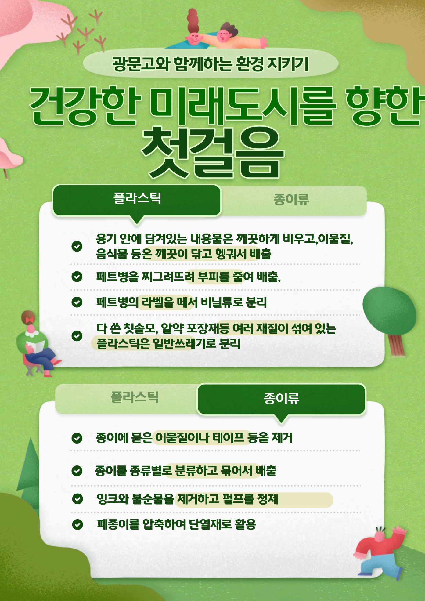

음료가 남은 캔
왜? 남은 음료가 흘러 다른 재활용품까지 오염시킬 수 있어요.
버리기 전 내용물을 비우고 물로 헹군 뒤 캔류 수거함에 넣어요.
SDGs 11 · 지속가능한 도시와 공동체
다 마신 페트병, 다 쓴 종이, 어디에 버려야할까?
분리수거의 방법과 그 효과에 대해 알아보세요.

분리배출 여부를 선택해 플라스틱, 캔, 종이의 처리 과정
쓰레기를 버리는 위치
| 품목 | 배출 안내 | 버리기 전에 |
|---|---|---|
| 페트병(생수병, 음료 페트병 등) | 플라스틱 | 내용물을 비우고 라벨을 떼어내요. |
| 음료 캔 | 캔류 | 음료를 비우고 헹군 뒤, 안에 넣은 빨대나 휴지는 빼요. |
| 종이(a4용지, 책, 노트 등) | 종이류 | 물기에 젖지 않게 반듯하게 펴서 쌓아요. |
| 비닐 | 비닐류 | 부스러기를 털어내요. 오염을 제거하기 어렵다면 일반쓰레기로 버려요. |
| 사용한 휴지 | 일반쓰레기 | 종이류 수거함에는 넣지 않아요. |
품목별 세부 기준을 더 알아보고싶다면? [분리의정석 배출요령]
왜? 남은 음료가 흘러 다른 재활용품까지 오염시킬 수 있어요.
버리기 전 내용물을 비우고 물로 헹군 뒤 캔류 수거함에 넣어요.
왜? 기름이나 음식물이 묻은 부분은 종이 재활용이 어려워요.
버리기 전 오염된 부분은 일반쓰레기로 버리고, 깨끗한 종이 부분은 떼어 종이류로 배출해요.
왜? 컵과 뚜껑, 빨대는 재질이나 배출 방법이 다를 수 있어요.
버리기 전 컵을 비우고 헹군 뒤 뚜껑과 빨대를 따로 떼어서 구분한 뒤 버려요.
평범한 일상에서 쓰레기를 줄이는 방법들
텀블러를 챙기고 물을 채워 마셔요. 일회용 컵이나 생수병을 쓰는 횟수를 줄일 수 있어요.
한쪽만 인쇄한 종이의 빈 뒷면은 수학 문제 풀이, 메모, 발표 초안에 써 봐요.
인쇄하기 전에 필요한 쪽과 부수를 확인해요. 여러 쪽이 필요하면 양면 인쇄로 종이 사용량을 줄여요.
KBS 뉴스
해양 쓰레기의 영향과 수거한 플라스틱이 재활용되는 사례를 살펴봐요.
해안 쓰레기와 재활용 영상 보기 ↗환경부
페트병의 배출과 재활용 과정을 알아봐요.
페트병 분리배출 영상 보기 ↗은평구청
물건을 다시 쓰고 쓰레기를 올바르게 분리배출하는 생활 속 실천을 알아봐요.
제로웨이스트 실전편 보기 ↗